Descubre la vida universitaria de Gabriel, donde su pasión por la escritura se entrelaza con la búsqueda de identidad y la exploración de amistades en un entorno dinámico y en constante evolución.
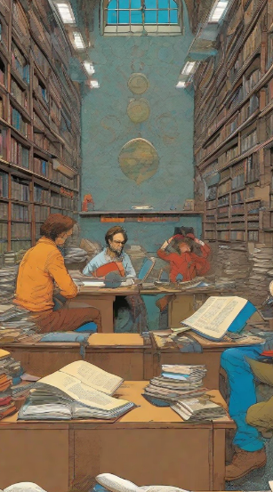
El Camino Universitario
Gabriel se adentró en la universidad con muchas emociones: el estrés de los exámenes finales, la euforia de nuevas amistades y la incertidumbre sobre su carrera. Cada día era una montaña rusa de nervios y felicidad mientras navegaba por los desafíos académicos y sociales que definirían su futuro.
Descubriendo su Pasión
A medida que avanzaba en su carrera, Gabriel descubrió una pasión genuina por la escritura y la literatura. Conoció a compañeros de clase que compartían su amor por las letras y juntos exploraron nuevas formas de expresión a través de proyectos creativos y debates apasionados sobre libros y autores favoritos.
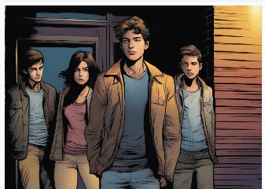
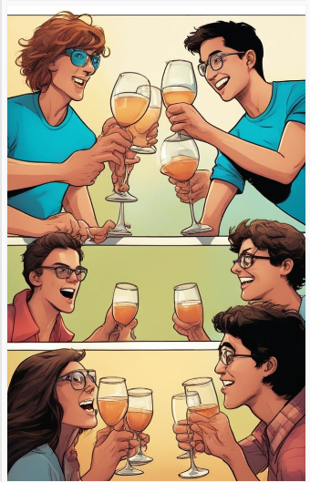
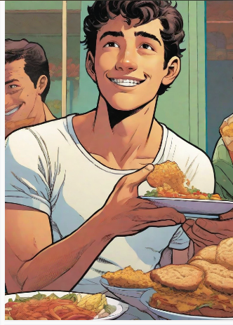
Enfrentando Desafíos
A medida que los semestres avanzaban, la carga académica se volvía abrumadora. Sin embargo, Gabriel se negaba a rendirse, enfrentando cada desafío con determinación y esfuerzo. Cada noche de estudio prolongada era un recordatorio de su compromiso con su carrera y sus sueños futuros.
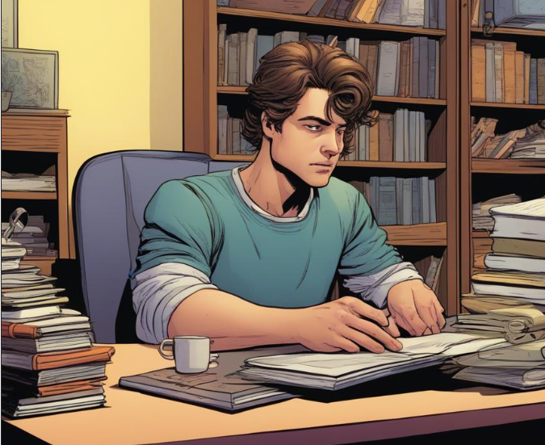
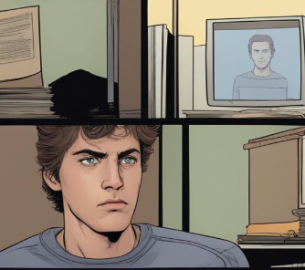
Desconexión Familiar
Fuera del campus, Gabriel lidiaba con el desafío de una familia que no comprendía completamente su pasión por la escritura y la literatura. A menudo se sentía solo en su viaje, luchando por encontrar apoyo y comprensión en un entorno que parecía distante y desconectado de sus aspiraciones.
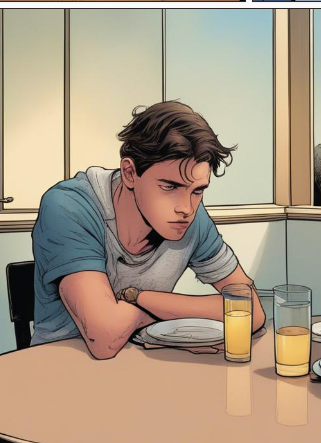
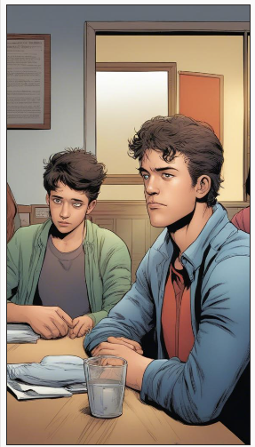
El Revés Académico
En un semestre particularmente difícil, Gabriel enfrentó la posibilidad de reprobar una materia crucial. Necesitaba apoyo y lo encontró en sus padres, aunque al principio lo reprendieron por descuidar sus estudios. Con el tiempo, aceptaron su situación y lo apoyaron en su esfuerzo por superar el desafío académico.
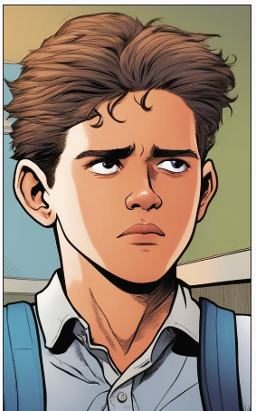
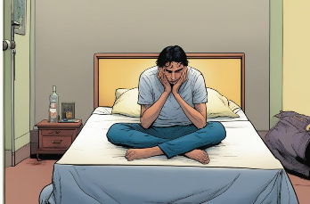
Conflictos Familiares y Apreciación
A pesar de los desafíos, Gabriel sabía que era amado por su familia, aunque a veces surgieran tensiones y desacuerdos. Entre discusiones y momentos difíciles, encontró consuelo en el hecho de que, a pesar de todo, había un lazo de afecto que los unía y que valoraba profundamente.
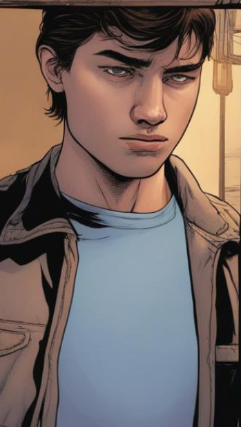
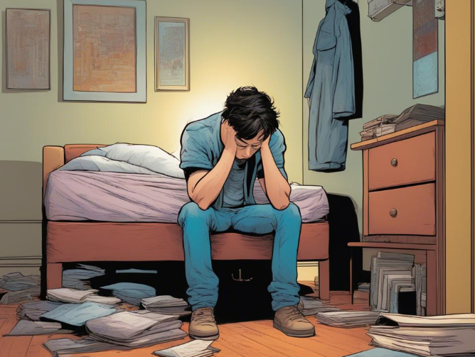
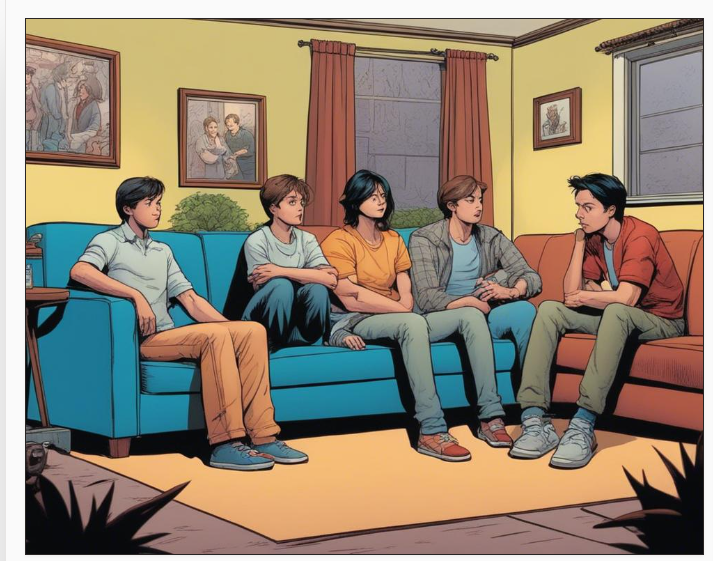
Amistades y Desafíos Sociales
En el campus, Gabriel experimentó la complejidad de las amistades universitarias. Conoció a personas que lo traicionaron y a otras que se convirtieron en amigos cercanos. Aunque disfrutaba de la vida social ocasional, prefería la tranquilidad de su habitación, donde podía escribir, jugar juegos y escuchar música para recargar energías.
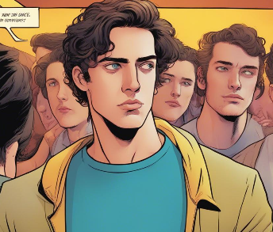
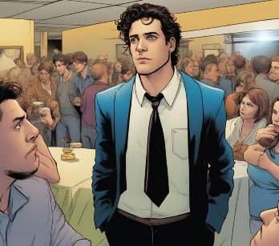
Amor y Desamor
En cuestiones de amor, Gabriel experimentó altibajos emocionales. Creyó haber encontrado su amor verdadero, solo para enfrentar la desilusión cuando las cosas no salieron como esperaba. Además, fue difamado injustamente por rumores de infidelidad, aunque encontró consuelo en relaciones significativas que le enseñaron lecciones valiosas sobre el corazón humano.
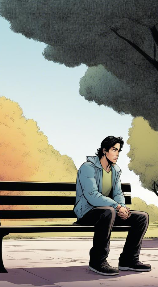
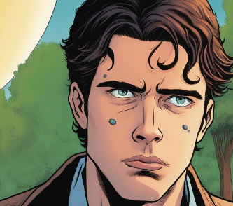
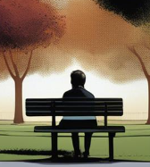
Balanceando los Altibajos
A lo largo de su viaje universitario, Gabriel aprendió a equilibrar los buenos momentos con los desafíos y las decepciones. Aunque había experimentado momentos difíciles, sabía que cada experiencia contribuía a su crecimiento personal y a su comprensión del mundo. Mirando hacia el futuro, estaba listo para seguir escribiendo su propia historia, llena de páginas aún por descubrir.


.png) 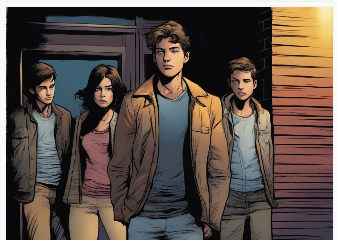
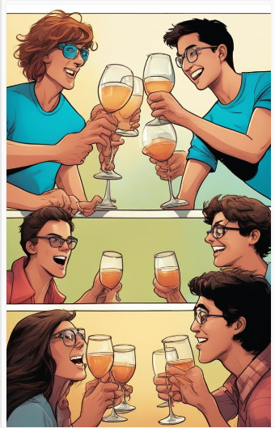
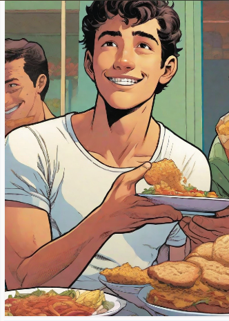
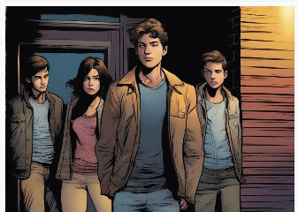
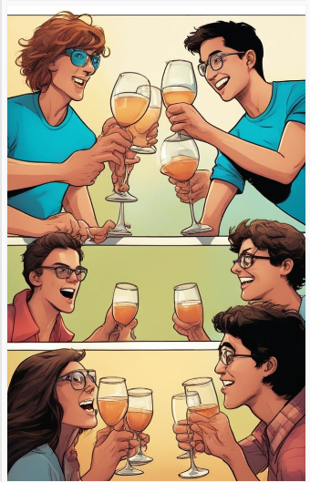
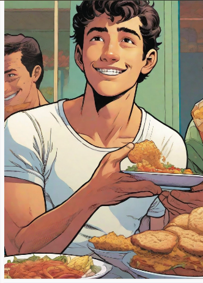